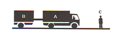
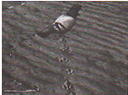
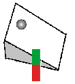
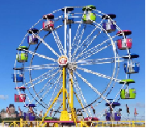

AZNAG
School
الصفحة الرئيسية
ملخصات مركزة
شاهد وتعلم
تمارين للتقوية
نقول إن الحركة والسكون نسبيان لأن حالة سكون وحالة حركة جسم ما
1
تتعلقان بجسم آخر يتم اختياره كمرجع
لا تتعلقان بأي جسم مرجعي
تتعلقان فقط بعامل الزمن
الجواب الأول
تجر عربة مقطورة على طريق مستقيمي
2

بالنسبة لملاحظ يقف على الرصيف نعتبره مرجعا
العربة A والمقطورة B في سكون
العربة A والمقطورة B في حركة
العربة A والمقطورة B في حركة والسائق في سكون
الجواب الثاني
باعتبار سائق العربة مرجعا
3
المقطورة B في حركة
العربة A في حركة
الملاحظ C في حركة
الجواب الثالث
4
يستقل مسافر (A) سيارة أجرة (T) تنطلق من محطة (S) نعتبرها مرجعا في حين يبقى مسافر أخر (B) ينتظر بالمحطة (S) قدوم سيارة أجرة ثانية
المسافر (B) في حركة
المسافر (A) في حركة
المسافران (A) و (B) في حركة
الجواب الثاني
5
في حالة اعتبار سيارة الأجرة (T) التي يستقلها المسافر (A) مرجعا يكون
المسافر (B) في حركة
المسافر (A) في حركة
المسافران (A) و (B) في حركة
الجواب الأول
6
تمثل التبيانة جانبه أثر تنقل طائر على سطح أفقي

مسار حركة الطائر خلال تنقله بالنسبة للسطح الأفقي:
منحني
مستقيمي
دائري
الجواب الثاني
7
في حالة اعتبار الطائر مرجعا يكون المسار في هذه الحالة عبارة عن
قوس دائري
قطعة من مستقيم
نقطة
الجواب الثالث
8
تتدحرج كرية فولاذية على مستوى أفقي انطلاقا من نقطة لتقترب من مغنطيس محوره متعامد مع المستقيم الأفقي المار بالنقطة

مسار حركة الكرية الفولاذية قبل اقترابها من المغنطيس:
منحني
مستقيمي
دائري
الجواب الأول
9
عند اقتراب الكرية الفولاذية من المغنطيس يصبح مسارها :
مستقيمي
دائري
منحني
الجواب الثالث
10
تمثل التبيانة جانبه عجلة ألعاب الأطفال تحمل مجموعة عربات

تدور العجلة حول محور ثابت يمر من مركزها ومثبت على سطح الأرض الذي نعتبره مرجعا، الجسم الذي يوجد في حالة دوران:
العربات
المحور
العجلة
الجواب الثالث
11
الجسم الذي يوجد في إزاحة:
العربات
العجلة
العجلة والعربات
الجواب الأول